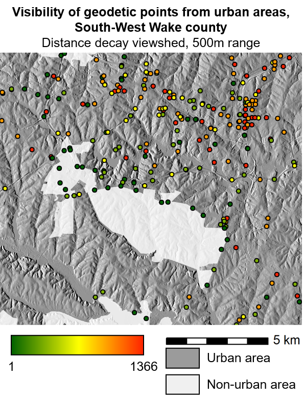

DESCRIPTION
r.viewshed.impact computes weighted (optional) visual impact
of each feature in a given exposure source vector map
using parametrised (optional) cumulative viewshed analysis.
NOTES
The algorithm
The processing workflow of the module consists of four steps that are
repeated iteratively for each feature of the input
exposure source vector map within the current computational region:
- Random sampling of exposure source with vector points,
- Calculating parametrised (optional) cumulative viewshed
from random points using
r.viewshed.exposure module,
- Optional multiplication of the (parametrised) cumulative viewshed
by weights raster,
- Summarising the pixel values of the resulting visual impact
raster and storing the value in the attribute
table of the input exposure source map.
 Processing workflow
Processing workflow
1. Random sampling
The processed feature is randomly sampled by vector points
in defined sampling density (0-100%; option sample_density).
In general, lower sampling densities lead to lower
accuracy, higher uncertainty of the result and lower processing time,
while higher sampling densities lead to higher accuracy, lower uncertainty of
the result and longer processing time.
2. Calculating (parametrised) cumulative viewshed
The vector sampling points are then used as input into
r.viewshed.exposure module
to calculate (parametrised) cumulative viewshed from of the
processed feature, using the input digital surface
model (option dsm).
The height of the processed feature is considered
to be 0m above the input digital surface model.
The following options are inherited from
r.viewshed.exposure module
and are thoroughly described in the documentation:
observer_elevation, function,
b1_distance, refraction_coeff and flags
c and r.
The range of visual exposure can be specified either
as constant (option range_max) or variable
based on attribute value for the processed feature
(option range_col).
3. (Optional) multiplication by weights raster
If the option weight is specified, the (parametrised)
cumulative viewshed is multiplied by a weight raster map.
This allows to account for variable visual
impact at different areas or to exclude specific areas from the
visual impact computation.
4. Summarising the visual impact value
The visual impact of the processed feature is expressed as a
sum of pixel values of the (weighted) (parametrised) cumulative
viewshed. The resulting value is stored in an
attribute table column of the input exposure source map
(option column). In addion, the resulting visual impact maps
created in step 3. can optionally be kept (flag k).
Memory and parallel processing
Option memory specifies the amount of memory allocated for
viewshed computation with
r.viewshed.exposure.
Option cores_e specifies the number of cores used in
parallel processing of
r.viewshed.exposure.
Option cores_i specifies the number of cores used in
parallel processing of the iteration over exposure source map
features.
A general advice is to use smaller number in cores_e and larger number
in cores_i in processing a dataset with many small polygons/lines/points
and larger number in cores_e in processing a dataset with larger
polygons.
EXAMPLES
Computation of visibility of geodetic points from urban areas in South-West Wake county,
North Carolina. Input data are a terrain model, a vector map of geodetic points
(exposure source) and a raster map of urban areas (weights) from NC dataset.
Viewshed parametrisation function is set to Distance decay, exposure range
is set to 500m.
# set computation region to terrain model
g.region raster=elevation@PERMANENT
# copy vector maps of geodetic points to the current mapset
g.copy vector=geodetic_swwake_pts@PERMANENT,geodetic_swwake_pts_local
# calculate visibility of geodetic points from urban areas
# keep the resulting visual impact maps
r.viewshed.impact -k
exposure=geodetic_swwake_pts_local
column=visibility_urban
dsm=elevation@PERMANENT
weight=urban@PERMANENT
observer_elevation=1.5
range=500
function=Distance_decay
sample_density=100
seed=1
prefix=visual_impact_
cores_e=1
cores_i=4

Example of r.viewshed.impact - visibility value
 Example of r.viewshed.impact - visibility impact map
Example of r.viewshed.impact - visibility impact map
TODO
- Implement variable exposure source height.
KNOWN ISSUES
- Only areas with centroid within the computational region are processed.
Areas with centroid outside the computational region are skipped.
REFERENCES
- Cimburova, Z., Blumentrath, S., Barton, D., 2022. Making trees visible: a GIS method and tool for modelling visibilty in valuation of urban trees. Manuscript submitted for publication.
SEE ALSO
r.viewshed,
r.viewshed.exposure,
r.viewshed.cva
AUTHORS
Zofie Cimburova, NINA
Stefan Blumentrath, NINA
{kind=link}